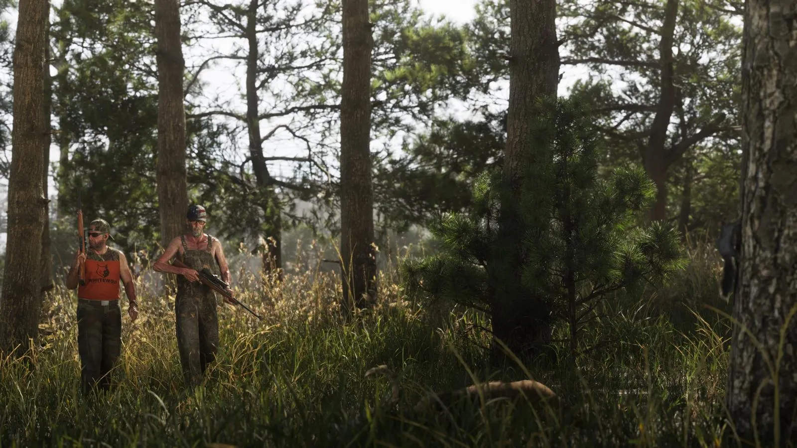

Bad Driver!: прохождение миссии GTA 6
Опубликовано:

Коротко
- Фелипе бросил команду перед ограблением, и Андреа нашла его в баре в Миллпорте. Погоня по лесу и выбор в конце: $20 000 сейчас или подарок от Фелипе потом.
- Необязательная миссия главы 4. Играем за: Джейсон и Лусия.
- Награда: $20 000 от Андреа, если убить Фелипе; если пощадить — открывается Collect Felipe’s Gift (его машина).
Миссия коротко
| Глава | 4. Vice City, Baby |
| Тип | необязательная, пропускаемая |
| Играем за | Джейсон и Лусия |
| Кто даёт | Андреа |
| Где начинается | округ Lummox, Millport — бар |
| Условие | после Party Hard |
| Награда | $20 000 от Андреа, если убить Фелипе; если пощадить — открывается Collect Felipe’s Gift (его машина) |
Прохождение по шагам
- Езжайте в Миллпорт (округ Lummox) после Party Hard — задание даёт Андреа, начать можно любым героем.
- Войдите в бар и идите вглубь — Фелипе выйдет из туалета и сбежит.
- Догоните его в лесу за баром: стреляйте в спину или ноги, чтобы замедлить, потом бейте в рукопашной, пока он не сдастся.
- Наведитесь на Фелипе — L2 (LT) — и поговорите.
- Решите: отпустить его в диалоге или застрелить.
Советы
- Стреляйте по ногам, а не в голову: до разговора Фелипе нужен живым.
- Выбор окончательный — заранее решите, что важнее: деньги сразу или машина Фелипе позже.
- Если убить Фелипе, Андреа платит $20 000. Если отпустить, он позже выходит на связь, и открывается необязательная миссия Collect Felipe’s Gift — его машина (PowerPyx).
- Для сюжета миссия необязательная, но нужна для 100% (GTABase).
Когда пропадает
Пропускаемая. Пропадает навсегда после миссии Power Play.
← Все необязательные миссии главы 4
Частые вопросы
Убивать ли Фелипе в Bad Driver!?
Убийство даёт $20 000 от Андреа. Если пощадить, откроется задание Collect Felipe’s Gift — с его машиной.
Когда пропадает Bad Driver!?
После миссии Power Play — навсегда.
Обязательна ли Bad Driver!?
Для сюжета нет, для 100% — да.
Источники: PowerPyx, «GTA 6 Bad Driver! (Find Felipe) Walkthrough», 19.11.2026; PowerPyx, GTABase — Bad Driver!, 19–28.11.2026. Кнопки указаны для PS5, в скобках — Xbox. Названия миссий — как в английской версии игры.